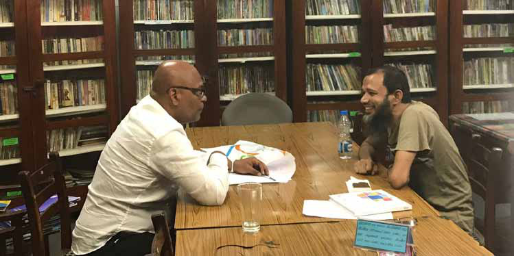

"Sri Lankan Muslim clergy, community leaders, and politicians should have protected Sufism, their traditional Islam that ensured peace between Muslims and non-Muslims for generations."
"Sri Lankan Muslim clergy, community leaders, and politicians should have protected Sufism, their traditional Islam that ensured peace between Muslims and non-Muslims for generations."
Jaffna Monitor hellojaffnamonitor@gmail.com 24 influencing their poorly educated masses. They think the 9/11 attack was staged by the CIA to justify the US invasion of Afghanistan and Iraq and that the Hamas attack was orchestrated by MOSSAD to justify the Israeli occupation of Gaza. Conspiracy theories surround almost all catastrophic attacks, from 9/11 to the Bali bombing. Regarding the Easter Sunday attack, the Sri Lankan government is also not without fault. Despite receiving comprehensive intelligence from India about a pending attack, Sri Lankan political leaders, defence officers, and law enforcement authorities did not act swiftly. They pandered to politics. Intelligence on the enemy will never be complete, accurate, or up-to-date. Every leader and commander must take action with partially available intelligence based on their intuition, maturity, expertise, and experience. Intelligence is not merely a job—it is a craft. Only the trained and experienced can accurately read the threat. When they received intelligence of a pending attack, the Sri Lankan government should have deployed hunting teams to catch or kill Zahran and his team and protected the churches and hotels. At least, the Government should have made the threat information about the perpetrators and attack plans public. As national security was the brand of the previous Government, Yahapalanaya leaders did not take national security seriously. The country paid a heavy price for politics. "Sri Lankan Muslim clergy, community leaders, and politicians should have protected Sufism, their traditional Islam that ensured peace between Muslims and non-Muslims for generations." Professor Rohan Gunaratna in conversation with Noufer, the Islamic State theoretician and successor to Zaharan.

Jaffna Monitor hellojaffnamonitor@gmail.com 25 The conspiracy theories surrounding the Easter Sunday attack in Sri Lanka have no basis. I interviewed almost everyone detained, reviewed their debriefings, and examined their electronics. In addition to domestic law enforcement authorities investigating the Easter attack, international police and intelligence services, as well as INTERPOL, also investigated the attack. Over the past five years, New Scotland Yard, the FBI, CIA, AFP, RAW, IB, Mossad, and other law enforcement and intelligence agencies have not disputed the findings. Additionally, the US indicted the main accused. Four fact-finding reports concluded that the attack was driven by Muslim religious extremism, a global phenomenon. Catholics questioned how God could allow the faithful to be killed in houses of worship. This caused a crisis in the Church and in the community. Despite the efforts of the Cardinal's legal advisor, Shammil Perera PC, a brilliant and farsighted leader, to educate the Church, the Easter attack was turned into a political tool. The misinformed and misguided believe that there is a conspiracy behind the Easter Sunday attack. How could a religious fanatic like Zahran commit suicide to please a Sinhala Buddhist nationalist like Gotabhaya Rajapaksa? After all questions from the Church were answered by the investigators, the Cardinal requested all the volumes of the Presidential Commission of Inquiry led by Justice Janaka de Silva, a competent and hardworking legal expert. The Cardinal received the entire set of volumes, something another government might not have done. Without basis, the Church went too far in accusing the security forces of staging the attack to bring the Rajapaksas to power. Now, the Church has realized there is no conspiracy. However, the extent to which they went is too far to retract. To buy indefinite time, the Church is now using different third parties to create new or renew old conspiracy theories each year as a getaway strategy. From the initial conspiracy theories, the Church has now deviated. All this has damaged the nation's security - it divided the Catholics and non-Catholics and stopped the rehabilitation plans. My opinion is that an international investigation is not necessary as foreign governments have already concluded that the massacre was conducted by religious extremists. However, if the next Government wishes, we should constitute an independent investigative body with foreign and local experts. This is not to start a fresh investigation but to revisit and review the investigations conducted so far, find out any lapses, and then investigate those gaps. Then, the Government can come to a conclusion as to whether the investigations were conducted appropriately and determine what exactly happened. The conspiracy theory surrounding the Easter Sunday attack was introduced by power- hungry Sinhala politicians. It was conveniently embraced by the Church, the grieving party. Not all Catholics believe in it. The damage to national security is huge - social cohesion was compromised and the counter radicalisation program was disrupted. When those in custody are released, they will harm others, inflect others, and will be hailed as heroes. What long-term strategies do you believe are essential for Sri Lanka to implement to ensure the safety and security of its citizens while addressing the underlying issues of radicalization?